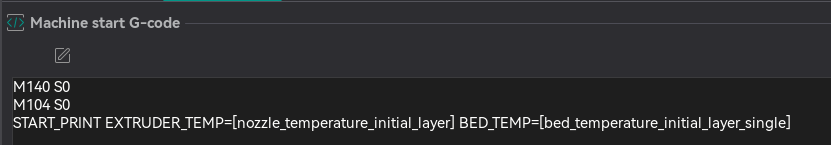
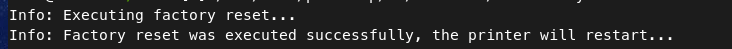
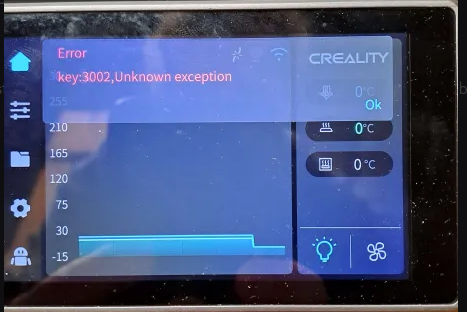
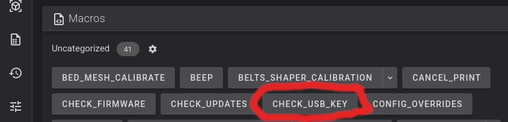
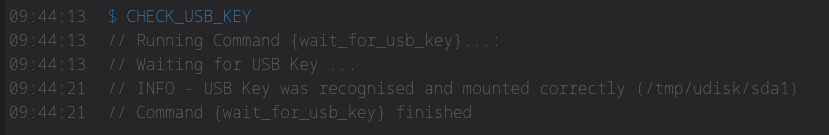
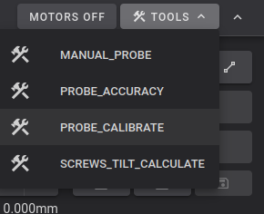
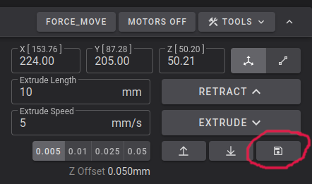
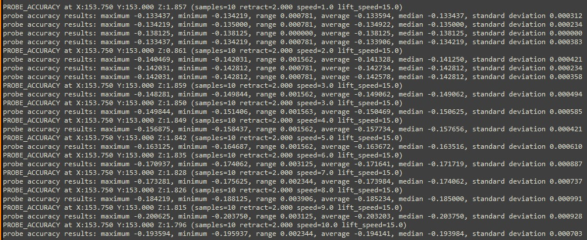
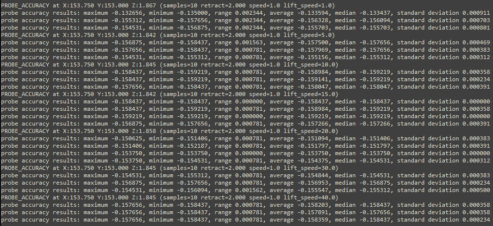

BL Touch, CR-Touch and 3D Touch¶
Where can I get help?¶
Come on over to the pellcorp discord server, the #simple-af-bltouch channel has been setup for anyone wanting support for bltouch, crtouch or 3dtouch.
What about CrTouch¶
Yep you can use a CrTouch as an alternative to a BlTouch, however I have not personally used either of these with a K1 and so I can't currently provide detailed guidance on what config is required.
What about 3d Touch¶
Its possible a 3d touch will work too, but depending on the capabilities of the 3d touch clone, you might need to make some post installation changes. I also think 3dTouch might require slightly different wiring.
Please refer to more details, specifically note the fact that the QUERY_PROBE may not be supported, and the probe_with_touch_mode feature is not supported!
https://www.klipper3d.org/BLTouch.html#bl-touch-clones
Firmware requirements¶
Limits on X and Y microsteps¶
You cannot use more than microsteps: 64 for [stepper_x] and [stepper_y], the MCU cannot handle high microsteps, it puts too much pressure on the mainboard and it will cause stuttering and other reliability issues including random crashes.
Note
This limit generally does not apply to RPi Series Simple AF
K1 Series¶
This guide assumes you have a K1, K1C, K1SE or K1 Max and you are running stock creality firmware 1.3.3.5 or higher (The firmware 1.3.3.5 is much older than 1.3.3.46 for example), or alternately you can use my prerooted firmware.
Ender 3 V3 KE¶
This guide assumes you have a stock Ender 3 V3 KE with Nebula Pad with Root enabled, when you get to installation below, you should specify the --mount Default to install
Simple AF on the KE for Cr-Touch.
Please note that you will need to change the screen orientation to horizontal, here is a model for that https://www.printables.com/model/727362-ender-3-v3-ke-screen-holder-landscape-for-guppyscr, but please do not follow the installation instructions on that page, just print the model and remount your screen only!
Ender 5 Max¶
This probe is currently not supported on Ender 5 Max
Simple AF for RPi¶
Slicer Settings¶
Danger
Creality Print won't be able to see your printer after you have installed Simple AF, the only tested slicer we all use is OrcaSlicer, likely if you want to use Creality Print you will need to print via usb.
Cura Slicer won't work out of the box for configuring START_PRINT variables as below, you need to change the start print EXTRUDER_TEMP and BED_TEMP to pass in the correct values, but since I don't use Cura Slicer I can't advise on that!
There is an assumption that you are using a slicer like OrcaSlicer and Machine G-code like:

Machine start G-code
M140 S0
M104 S0
START_PRINT EXTRUDER_TEMP=[nozzle_temperature_initial_layer] BED_TEMP=[bed_temperature_initial_layer_single]
Machine end G-code
Custom Bed Mesh Profile¶
If you want to select a specific predefined bed mesh profile (which disables adaptive mesh generation), you can pass in an additional START_PRINT parameter:
You can either hard code it to a particular model, like BED_MESH_PROFILE=myprofile or you can specify a profile based on orca slicer variables, such as BED_MESH_PROFILE="[curr_bed_type] - [filament_type]", but you have to make sure you have all the possible profiles
defined for each of the bed type and filament type combinations.
Probe Installation¶
Danger
If you are not using a side mount you must verify config changes for bltouch.cfg before homing your printer, using Screws Tilt Calculate or doing a bed mesh!
Ignoring these instructions can lead to significant damage to your build plate and/or probe.
Mount Options¶
| Mount | Printer | URL | Notes |
|---|---|---|---|
| Default | K1, K1C, K1M, K1SE | https://www.printables.com/model/666186-creality-k1-bltouch-adapter | |
| CrTouch | K1, K1C, K1M, K1SE | https://www.printables.com/model/1073375-cr-touch-mount-k1-k1maxk1c-zero-y-offset | Untested on K1M |
| Default | Ender 3 V3 SE | N/A | Default CR Touch Mount |
| Default | Ender 3 V3 KE | N/A | Default CR Touch Mount |
Installation¶
Warning
The installation section does not apply to Simple AF for RPi, See Simple AF for RPi
The installation can only be performed on a printer which has been rooted and ssh granted
You need root access, if you are not already root, then follow the excellent Helper Script Enable Root Access instructions.
Factory Reset¶
You must do a factory reset only if you have installed Helper Script or Fluidd/Mainsail directly from Creality, otherwise you can safely proceed directly to an installation. If you have setup your printer with stock firmware only it can be quite handy to skip a factory reset so that you can use Switch to Stock
Please note that because the Ender 5 Max and Ender 3 V3 KE both use the same basic software as the K1 series, the following step applies to these printers as well.
wget --no-check-certificate https://raw.githubusercontent.com/pellcorp/creality/main/k1/services/S58factoryreset -O /tmp/S58factoryreset
chmod +x /tmp/S58factoryreset
/tmp/S58factoryreset reset
Danger
It is really important you do not close the ssh session until you get this message:

It can take up to 5 minutes for a factory restart to finish, it is vital you do not power cycle your printer before the stock screen appears. There may be a 3002 error on the screen, this is completely normal. If you are planning to install Simple AF you can ignore it, if you are trying to go back to stock, power cycle the printer again to clear the error.
Failing to follow this advice can lead to your printer getting bricked and requiring much more involved intervention to recover!

Clone the Repo¶
git config --global http.sslVerify false
git clone https://github.com/pellcorp/creality.git /usr/data/pellcorp
Run the installer¶
Note
If you have pellcorp-overrides in github but not stored locally, you need to recreate the ~/pellcorp-overrides directory before running the installer.sh!
To run the script, you must specify the probe you want to use.
Warning
For Mount you must specify the mount option for the mount you have used, if you do not do this the printer will be incorrectly configured for your mount, and bed meshes, x and y limits and related config will be wrong. Please refer to Mount Options for supported mounts.
If you are using a non-supported mount you should specify a mount option as close to your mount as possible and properly adjust your configuration after installation before trying to perform a bed mesh or Screws Tilt Calculate!
Post Installation¶
MCU Firmware updates are pending¶
At the end of the installer process if you get this message:
It means that new MCU firmware updates need to be applied and this can only be done by power cycling the printer. After your printer is power cycled you can verify firmware was updated with the CHECK_FIRMWARE macro from Fluidd or Mainsail, if you see this message:
Your printer MCU firmware was updated successfully. If you still see the MCU Firmware updates are pending you need to power cycle your printer! message after a power cycle, check the /tmp/mcu_update.log, you may be asked to provide this file on Discord if you need additional assistance, sometimes an additional power cycle can solve the problem, there is a very short window of time (15 seconds) in which the MCU firmware can be updated, so there is a chance it will work after an additional power cycle.
Verify USB Key¶
It is important to make sure you have a way to emergency factory reset the printer, if the worst happens. There is a macro in Simple AF called CHECK_USB_KEY that will wait for you to plug a USB thumb drive (aka USB key) in and tell you if it was able to be successfully mounted.
You can find the CHECK_USB_KEY macro in Fluidd or Mainsail, because Fluidd and Mainsail are already installed, you can access Fluidd by opening your browser and connecting using http://X.X.X.X, where X.X.X.X is your ip address that you used to login via ssh to your printer, you can also access Fluidd via http://X.X.X.X:4408 and Mainsail via http://X.X.X.X:4409!

After running the macro you should see output like the following:

- If you get the message:
INFO - USB Key was recognised and mounted correctly (/tmp/udisk/sda1), your USB thumb drive (aka USB key) is perfect to use for a factory reset. - If you get no message at all before the script ends (after 60 seconds), your USB thumb drive (aka USB key) is defective. You can check the
messagesfile in the logs section of your UI to get more details about why the usb key could not be mounted!
Tip
You should verify your USB thumb drive (aka USB key) often just to make sure you have something if you need to unbrick your printer, simply type CHECK_USB_KEY or hit the button in Fluidd / Mainsail
The USB key should be FAT32 formatted and be no larger than 32GB!
Calibration¶
Warning
The following calibration steps are required to setup a new printer:
Probe Calibrate¶
For the bltouch/3dtouch/crtouch it is extremely important to do the PROBE_CALIBRATE step to configure your z-offset, regardless of what model you have used to mount the probe!

- Home All (
G28) - Run
PROBE_CALIBRATE - Follow the Paper Test Method
Upon completionSAVE_CONFIG
Note
The default z-offset for BLTouch, 3dTouch and CrTouch is 0, so your prints won't stick without doing this step.
Pid Tuning and Input Shaping¶
At least PID tuning (bed and extruder) and input shaping is required for acceptable printing. If you try and print after running the installer.sh and a power cycle but before any calibration you will most likely have horrendous quality, the worst you have ever seen on the k1. After PID tuning and input shaping you should see the same kind of quality as you get with stock k1 + input shaper fix.
Note
You can use the QUICK_START Macro to complete Bed and Nozzle PID Tuning and Input Shaping Automatically.
Pid Tuning¶
Source: Calibrate Pid Settings
For example you might run these:
Note
The PID_CALIBRATE_BED and PID_CALIBRATE_HOTEND macros are located in the useful_macros.cfg file and they have defaults values for BED_TEMP and HOTEND_TEMP so you can just run them by clicking on them if you want that same temperature.
Input Shaping¶
There is no default configuration for input shaping so it is essentially disabled out of the box.
You can use the SHAPER_CALIBRATE macro to run input shaping, just be sure to SAVE CONFIG at the end, to choose the automatically selected shaper config, be aware though that the shaper chosen might be sub-optimal due to a slight difference in vibrations between two options. So you should probably review the output and potentially choose an alternative if it gives you higher recommended max acceleration for minimal increase in vibration.
Axis Twist Compensation¶
Next it is highly recommended to perform axis twist compensation calibration before doing anything else, this will affect the quality of your bed mesh, so best to do it before.
- Home All (
G28) - Run
AXIS_TWIST_COMPENSATION_CALIBRATEThe calibration wizard will prompt you to measure the probe Z offset at a few points along the bed
Upon completionSAVE_CONFIG
Source: https://www.klipper3d.org/Axis_Twist_Compensation.html
First Print¶
You should optimise your probe z offset using baby stepping.
In fluidd the save button after you finish or cancel your print can be a bit hard to find, look for

Probing speed¶
On a K1/Max a faster lift_speed may counter the backlash on the Z-axis belts. Going too fast is likely making the bed bounce back in the opposite direction. Find the best speeds for probing by varying the probe_speed and lift_speed parameters. Start with probe_speed=1 and vary the lift_speed values to find the optimal lift_speed first.
In this case, lift_speed of 15mm/s seems optimal.

After determining the optimal lift_speed, different probe_speed values can be tested until the sweet spot is found. Here 1.0mm/s works most reliably, however, the slow speed will make the meshing process take longer.

Credit to Ales Omahen (@Havoc on discord) for this section
Other Calibrations¶
Info
The default value for pressure advance is set to 0.04
Refer to Orcaslicer Calibration for more calibrations
Refer to the Ellis Print Tuning Guide for more great tuning ideas.